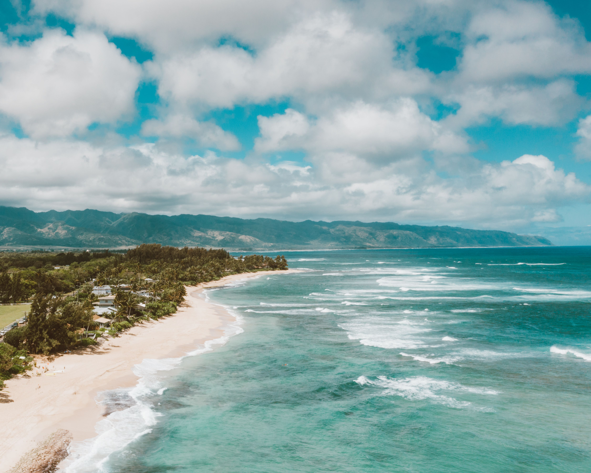
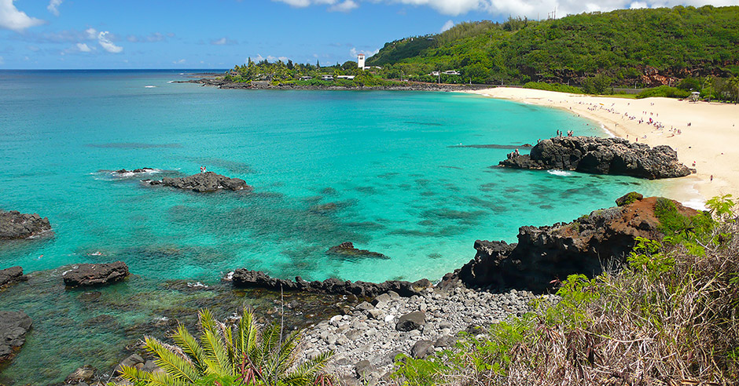

Overview
The North Shore is known for sandy beaches, clear water, and big winter waves. Some days are calm and great for swimming, and other days are best for watching surfers. This page highlights a few famous spots and what each one is known for.

Sunset Beach
Sunset Beach has a long shoreline and great views at the end of the day. Winter swells can bring big surf, and calmer seasons are perfect for walks and relaxing by the water.
Banzai Pipeline (Ehukai)
Pipeline is one of the most famous surf breaks in the world. Waves break over a shallow reef and form fast barrels. It’s a popular place to watch experienced surfers from the sand.

Waimea Bay
Waimea Bay is a wide, beautiful beach with a deep blue bay. In summer it can be calm for swimming and snorkeling. In winter the waves can get powerful and the surf is world-famous.
- I chose this color - "rgb(198, 169, 5)" - to emphasize some of the texts.
- I chose this color - "rgb(49, 161, 130)" - to de-emphasize the link text "Top of the Page"
- I chose my colors by looking at the pictures I displayed on my page. I chose the dominating colors of the beach pictures I used.